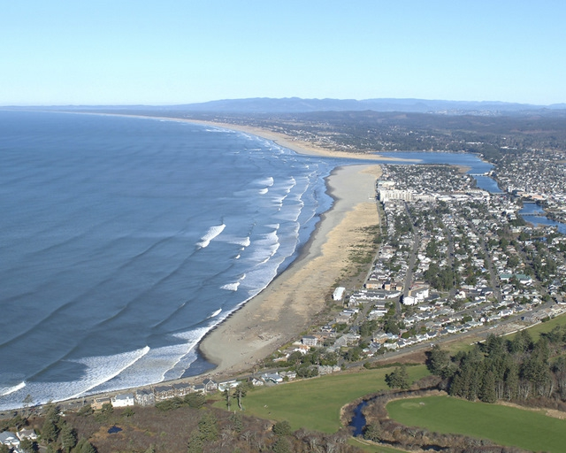

Many cities on the oregon coast have sizable portions that will be completely swallowed by a sizable Tsunami caused by the Cascadia Subduction Zone Earthquake in what's called an Inundation Zone
Astoria is a city in Oregon. It's on the Columbia River, near the Pacific Ocean. The Astoria Column, a towering hilltop monument with murals depicting area history, offers panoramic views. The Columbia River Maritime Museum showcases fishing, shipping and military history in a waterfront building. Set in a Queen Anne–style Victorian mansion, Flavel House Museum features period furniture as well as manicured gardens.
Elevation: 22.97′
Population: 9,802

Seaside is a small resort city in northwestern Oregon. Its beach is known for surf breaks and a 1920s promenade. The Seaside Aquarium has touch tanks and a seal exhibit.
Elevation: 17.06′
Population 6,685
Tillamook is a coastal town with large feilds for dairy cows that are at risk during a tsunami scenario. The town is home of the Tillamook Cheese Factory and the Tillamook Air Musuem
Elevation: 23.95'
Population: 5,183
Lincoln City is a town on the central coast of Oregon. At the D River State Recreation Site, the short D River connects Devil’s Lake to a sandy Pacific beach. Lincoln City is one of the lowest lying towns on the Oregon coast
Elevation: 3.281′
Population: 8,722
Newport is a city on Oregon’s central coast. The Oregon Coast Aquarium, on Yaquina Bay, features local marine life, with underwater walkways and a seabird aviary. While much of Newport is above the induation zone there is a large area that is prone to it
Elevation: 134′
Population: 10,393